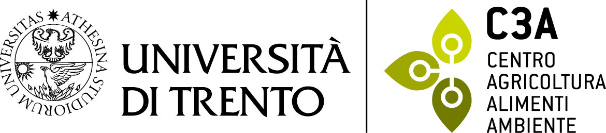
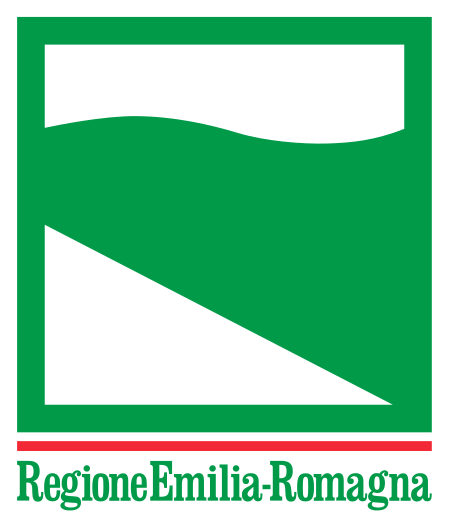

| Home | Registration | Program | Directions | Presentation |
Climate-sensitive vectors are increasingly driving the spread of vector-borne diseases, posing significant public health challenges worldwide. This workshop is dedicated to exploring the diverse modelling approaches used to forecast mosquito and virus transmission. We envision this gathering as a collaborative platform for open discussions, where participants can collectively assess the strengths and limitations of existing models, delve into the potential of ensemble modelling, and explore practical applications for predicting epidemic risks.
Organised by the University of Trento, the Cyprus Institute, and the Emilia-Romagna region, this workshop aims to convene European modellers and stakeholders for an insightful dialogue on the technical details and future advancements in predictive models and modelling techniques for Climate-Sensitive Vectors, exemplified by the Aedes albopictus mosquito species.
Scientific Committee:
Daniele Da Re - University of Trento (Italy)
Roberto Rosà - University of Trento (Italy)
Giovanni Marini - Edmund Mach Foundation (Italy)
Alessandro Albieri - Centro Agricoltura Ambiente (Italy)
Kamil Erguler - The Cyprus Institute (Cyprus)
Paola Angelini - Emilia-Romagna region (Italy)
|  |  |